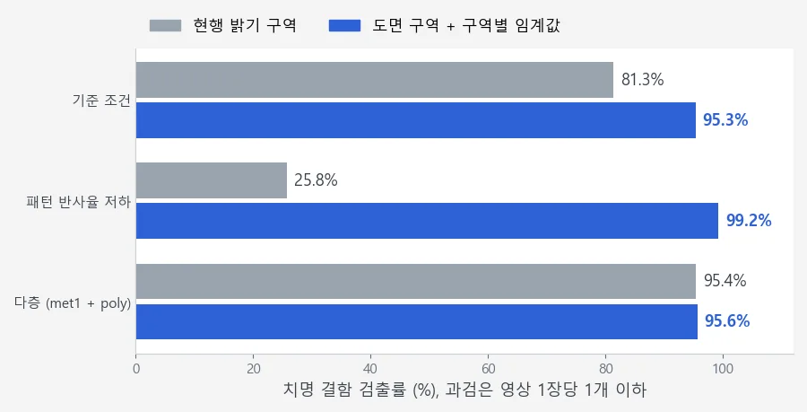

장비 SW 현장에서 반복되던 일을 줄이려고 만든 도구를, 누구나 자기 데이터로 쓸 수 있게 공개했습니다. 데이터는 사용자 기기에만 저장되고, 앱마다 재현 → 비교 → Shadow → 전환 · 롤백 절차를 같은 방식으로 넣었습니다. 앱의 측정값은 모두 합성 데이터 기준입니다.
현업에서 확인한 한계를 연구 주제로 가져갔습니다. 인하대학교 제조혁신전문대학원 반도체공정지능화융합, 2026.03 ~ 2028.02
현업에서 본 한계규칙 기반 로직은 제품과 공정 조건이 바뀔 때마다 사람이 검사 조건을 다시 조정해야 합니다.
바탕이 된 과제, RAC 와 Shot Key AlignRAC(Recipe Auto Creation)는 도면(GDS)을 검사 영상으로 바꾸고 Recipe 를 만든 뒤 조명, Focus, Align 을 자동으로 맞춥니다. Shot Key Align 은 사람이 맞추던 마크 검출 허용치를 현장 이미지 라벨로 학습하고, 규칙이 놓친 키는 CNN 이 보완합니다. 검사 임계값은 아직 사람이 정한 Preset 을 씁니다.
연구 주제설계 도면에서 검사 구역과 구역별 검사 조건을 자동으로 만드는 방법. 사람이 만든 구역과 얼마나 같은지, 검출력이 같은지로 검증합니다.
앞으로문제를 숫자로 정의하고 검증 가능한 방법으로 풀어, 사람이 일일이 조정하지 않아도 되는 장비 SW 를 만들겠습니다.

예비 실험: 공개 SKY130 설계와 가상 촬영 영상, 세로 4다이 비교 판정. 과검을 영상 1장당 1개 이하로 맞췄을 때 쇼트, 단선 위치 결함의 검출률입니다. 기준 조건 차이는 +14.0%p (95% 구간 +12.0 ~ +15.9). 대신 검사 면적이 22% 에서 39% 로 늘고, 정렬 오차 1 px 에 과검이 약 2배가 됩니다. 현행 방식도 임계값을 낮추면 기준 조건에서는 비슷해지고, 조건이 바뀔 때 차이가 납니다. 회사 데이터는 쓰지 않았습니다.
규칙 검출(실선)과 점수 미달로 놓친 흐린 마크(점선), 오른쪽 아래는 상관 맵. 합성 영상
Align 시간
−84%
오검출 (CNN 보완)
−59%
현장 Slot 검출
12/12
추론 p95 지연
−58%
1느리고, Site 마다 다시 등록
템플릿 방식 Align 은 느리고 새 Site 마다 마크를 다시 등록해야 했습니다. 규칙 파라미터가 이미지마다 맞지 않아 오검출도 생겼습니다.
2템플릿 없이 규칙으로 찾기
Die 단위 규칙 마크를 템플릿 없이 검출하고, 촬영 범위를 7줄에서 약 3줄로 줄였습니다. Align 시간 140초 → 23초 (84% 단축), 현장 12/12 Slot 검출.
3현장 이미지로 파라미터 학습
사람이 맞추던 규칙 검출 허용치를 현장 이미지 라벨로 학습해, 장비가 읽는 프로파일 파일로 내보내는 도구를 만들었습니다. 이미지 가져오기, 자동 라벨과 확인, 학습과 평가, 장비 적용을 한 화면에서 합니다.
처음에는 파일 이름 해시로 학습과 평가를 나눴는데, 같은 날 찍은 거의 같은 프레임이 양쪽에 섞여 점수가 실제보다 좋게 나왔습니다. 날짜 단위 고정 평가셋으로 바꿨습니다.
같은 평가셋에서 이전보다 검출이 줄거나 과검이 늘면 새 모델로 바꾸지 않습니다(회귀 차단).
모델끼리 의견이 갈리는 화면부터 라벨을 확인하게 해, 같은 라벨 수로 더 많이 배우게 했습니다. 같은 수를 무작위로 고를 때보다 검출률이 높았습니다.
규칙 결과를 다시 확인하는 HOG + 로지스틱 회귀 검증기를 외부 라이브러리 없이 C# 로 구현했고, 판정 문턱은 정상과 오검출 점수 분포 사이의 빈 구간에서 정했습니다.
4장비 추론 엔진에 맞춘 CNN
히트맵 CNN 의 업샘플 연산을, 장비의 구버전 추론 엔진이 읽을 수 있는 ConvTranspose 로 바꿔 ONNX 로 내보냈습니다. C# 추론 결과가 Python 과 같은지 대조했습니다. 모델을 가볍게 줄이는 대신 병렬 실행으로 추론 p95 지연을 약 58% 줄였습니다.
5CNN 은 Shadow 로 먼저
규칙 결과를 CNN 이 검증하고, 실패하면 CNN 위치로 대체합니다. 바로 바꾸지 않고 Shadow 로 병행 운용하며, 단계적 투입과 즉시 롤백을 계획했습니다.
업무성과 평가: CNN 은 검출을 유지하면서 오검출을 59% 줄였고, 검출 향상은 통계적으로 유의하지 않아 그대로 보고했습니다.
학습 도구의 날짜 분할 오프라인 평가: 결합 정책이 규칙 단독의 놓침(약 2.6%)과 마크 없는 화면 오검출(약 5.1%)을 모두 0으로 줄였습니다. 사내 이미지 기준이고, 평가 라벨이 규칙에 유리하게 치우쳐 있으며, 현장 적용 전입니다.
C#, C++, OpenCV, PyTorch, ONNX, HOG
근거: 2026 상반기 업무성과 자료, 2026년 37주차 업무 보고, Shot Key 학습 도구 문서
2026 · 변환과 Masking 알고리즘, 자동 시퀀스, UI, 사용자 Manual
검사 Recipe 자동 생성 (RAC)
왼쪽 단순 변환, 오른쪽 좌표 Snapping + Oversampling (합성 패턴)
Bump Recipe 작성 시간
−92%
대면적 변환 시간
−87%
자동 배치 Bump
약 25만 개
1수 시간의 수동 Teaching
Recipe 한 건에 수 시간의 수동 Teaching 이 들었습니다. 도면을 영상으로 바꾸면 미세 원형 패턴이 찌그러지고 위치가 어긋났습니다.
2모양과 위치를 함께 복원
Min Pooling 방식을 좌표 Snapping, Oversampling, Box Resampling, Threshold 로 바꿨습니다(위 그림). 여러 크기의 VIA 와 Bump 로 기준 영상과 일치하는지 검증했고, 양산 자재(8µm VIA, 20µm Bump)로 위치와 형상이 일치해 양산 검증을 통과했습니다.
3대면적은 필요한 곳만
실제 Layer 영역만 Tile 병렬로 처리해 대면적 변환을 314초에서 42초로 줄였습니다. 수백 MB 비트맵을 읽지 못하던 문제는 헤더를 직접 파싱해 해결했습니다.
4Bump 25만 개 자동 배치
4점 원근 보정으로 Bump 약 25만 개를 배치하고, 첫 Layer 의 보정값을 다음 Layer 가 물려받게 했습니다. Bump Recipe 작성은 4시간에서 20분으로 줄었습니다. 같은 주제를 석사 연구(도면 특징으로 영역별 검사 임계값 정하기)로 이어가고 있습니다.
5흩어진 RAC 를 하나로
Site 마다 따로 운영되던 Recipe 생성 환경을 묶는 통합 도구를 만들고, 도면 → BMP 변환과 Auto Masking 을 하는 GDS Editor 를 구현했습니다. 전 Site 적용은 예정입니다. RAC 운영 방안, 사용자 Manual, Featureless Align 양산 전환 계획 등 고객 공유 문서 4건을 썼습니다. 통합 도구의 배포와 안정성은 따로 정리했습니다.
C# (WPF), C++, Python
근거: 2026 상반기 업무성과 기술서
2026 · 알고리즘과 분석 도구 개발 전체
Die 가장자리 Crack 검출
가장자리 검사 밴드(파랑)와 제외 영역(빗금), 검출된 Crack (합성 영상)
전체 결함 중 새로 검출
28%
분할 대상 영상
장당 TB 급
1놓치거나 과검하던 가장자리
적층 메모리 Die 가장자리 Crack 을 기존 Die 비교 조건이 놓치거나 과검했습니다. 장당 TB 급 영상은 일반 PC 에서 열 수도 없었습니다.
25단계로 나눈 검출
가장자리 탐색, 가변 Mask, 결함 검출, 크기 필터, Interlock 의 5단계로 나누고, 가장자리 띠 폭과 밝기 조건을 파라미터로 뺐습니다. 전체 결함 1,883건 중 524건을 새로 검출했고, HBM4 4개 조건을 모두 통과했습니다(Real Rate 목표 70% 대비 최대 92.6%).
3TB 급 영상을 여는 도구
영상을 Tile 로 나눠 필요한 영역만 여는 독립 프로그램을 만들고 채널별 분리 저장도 넣었습니다. 고객 요구 Align 지표 7종을 로그에서 자동 집계해 엑셀로 내는 도구도 만들었습니다.
C++, C# (WPF), OpenCV
근거: 2026 상반기 업무성과 기술서
2026 · 설계와 구현
흩어진 레시피 관리 도구 통합
장비와 서버가 공유 폴더를 메시지 채널로 씁니다.
문제
레시피 관리 기능이 도구 3개로 나뉘어 있어, 버전 확인, 수정, 배포, 복원을 도구를 옮겨 다니며 처리했습니다.
접근
버전 저장소와 이력, 일괄 수정, 배포, 복원, 기준 등록과 검사 전 버전 검증을 하나의 도구로 옮겼습니다.
서버 프로그램을 새로 만들고, 공유 폴더를 메시지 채널로 써서 요청과 결과를 멱등하게 처리했습니다. 일시 오류만 재시도하고, 임시 파일에 쓴 뒤 이름을 바꿉니다.
결과
자체 검증 모드(장비 측 38, 서버 11 항목)와 연동 시험 19항목을 갖췄습니다. 장비 현장 검증 예정입니다.
C# (WPF), Client/Server
근거: 개발 계획 문서 (2026.11)
2026 · 설계와 구현 전체 (생성 도구, 장비 배포, 도면 변환기) · 검사 Recipe 자동 생성의 통합 도구
RAC 통합 도구, 장비 배포와 안정성
재시작 때 처리 루프가 준비되기 전에 장비의 첫 메시지가 오면 버려져 멈춥니다. 루프가 준비된 뒤에 받기 시작하도록 고쳤습니다. 합성 시뮬레이션
반복 시작 200회
멈춤 0
단위 테스트
41 → 54
문제
웨이퍼 맵과 레이어 정보로 검사 레시피를 한 번에 만들고 여러 장비에 배포할 도구가 필요했습니다.
신규 장비 투입 전이라 산출물 형식, 이름 규칙, 맵 검증 기준이 장비 쪽 구현과 같아야 했습니다.
큰 설계 도면을 검사 마스크로 바꿀 때 메모리와 디스크가 모자랄 위험이 있었습니다.
접근
맵과 레이어 매칭 표로 레시피를 반자동, 전자동으로 만드는 WPF (MVVM) 도구를 만들었습니다.
텍스트 TCP 로 여러 장비에 배포합니다. 나뉘어 도착한 메시지를 경계 기준으로 다시 잇고, 응답 대기에 한도를 두고, 장비마다 처리 칸을 따로 두고, 같은 장비가 다시 접속하는 경우를 처리합니다.
도면(GDS, OASIS)을 마스크로 바꿀 때 띠 단위로 나눠 병렬로 그려 메모리를 일정하게 묶었습니다. 변환 전에 출력 크기와 디스크 여유를 확인하고, 임시 파일에 다 쓴 뒤 이름을 바꿉니다. 이전 Python 변환과 같은 픽셀을 내는 호환 모드도 뒀습니다.
투입 전에 장비 쪽 소스와 대조해 맵 검증과 이름 규칙을 장비와 같게 맞췄습니다.
결과
재시작할 때 약 4번에 1번 멈추던 처리 루프 시작 레이스를 고치고, 200회 반복 시작 테스트로 재발을 막았습니다.
재현율을 재던 반복 실행 프로그램에도 결함이 있어 처음 잰 값이 부풀어 있었습니다. 측정 프로그램부터 고친 뒤 다시 쟀습니다.
단위 테스트 41개 통과, 1개 건너뜀에서 54개 모두 통과로. 출력이 지나치게 커지는 설정은 아무것도 쓰지 않고 바로 거부합니다.
C# (WPF, MVVM), TCP, GDSII/OASIS, xUnit
근거: 개발 문서와 테스트 기록 (2026)
2022-2024
설비 데이터 백업과 용량 관리
3.5GB, 파일 4,373개 백업 시간 (평가 기록)
백업 시간 (3.5GB, 파일 4,373개)
25분 → 4분 20초
2022 검사 결과 데이터를 자동으로 지우는 기능을 넣어 HDD 용량 문제를 줄였습니다.
2023 오래된 설비 데이터를 옮기는 백업 프로그램을 만들고 백그라운드 실행, 트레이 아이콘, 자동 재부팅을 넣었습니다. 용량을 넘으면 데이터를 지우는 프로그램도 만들었습니다.
2024 복사와 로그 화면 갱신이 한 흐름에 묶여 느리던 것을 비동기로 나눠 25분을 4분 20초로 줄였습니다. 로그 화면을 쓰지 않으면 2초에 끝납니다.
근거: 2022 하반기, 2023 평가서, 2024 상반기 성과발표
2026
검사 결과 대용량 전송
검사 결과 전송 시간 (평가 기록)
1.2GB 전송
29초
4GB 전송
65초
기본 FTP 요청을 전용 라이브러리로 바꾸고 폴더 생성 후 업로드 순서로 정리했습니다.
서버 쓰기 권한이 바뀌어 생긴 오류는 별도 스크립트로 우회하고 사용자 매뉴얼을 만들었습니다.
근거: 2026 상반기 업무성과 기술서
2023 · Review 프로그램 알고리즘과 리포트
결함 좌표 매칭과 Review 리포트
합성 좌표로 재현한 원리. 장비 사이 위치 오차가 있으면 위치만으로는 옆 결함과 짝지어지고(왼쪽), 크기를 함께 보면 맞는 짝을 찾습니다(오른쪽).
Mask 결함 데이터와 검사 결과의 결함을 짝짓는 Mask Matching 에서, 위치 오차 때문에 크기 매칭이 틀어지던 알고리즘을 고치고 이후 기능을 계속 개선했습니다.
짝이 없는 결함이 위치 정보 없이 나오던 오류를 고치고, 매칭 대상 전체 개수와 결함 밝기(GV)를 함께 보여 주게 했습니다.
고객 요청 4건에 맞춰 Review 화면, 좌표 형식, 가로와 세로 형식 Excel 리포트를 바꿨습니다. 검사가 끝나면 좌표를 고객 형식으로 바꾸고 Y 축 반전을 고를 수 있습니다.
근거: 2023 상반기, 하반기 평가서
2026 · 사내 도구 설계와 구현 · 공개 데모는 합성 데이터로 다시 만든 것
주간 업무 보고 자동화 (사내)
공개 앱 화면. 사내 도구와 같은 흐름을 누구나 자기 git log 로 쓸 수 있게 다시 만들었습니다.
지금 쓰는 사람
10명
확장 예정
50명
문제
주간 보고를 쓸 때마다 한 주의 커밋과 메모를 다시 읽고, 사내 양식 PPT 에 손으로 옮겨 적었습니다.
접근
한 주의 git 커밋을 규칙으로 주제별로 묶고, 주제마다 제목과 요약 3줄을 만들어 양식 PPT 로 냅니다.
요약은 로컬 LLM 으로만 만들어 데이터가 밖으로 나가지 않습니다.
요약은 매번 검사합니다. 3줄, 줄당 80자, 입력에 없는 숫자나 "완료" 같은 상태어가 나오면 한 번 다시 만들고, 그래도 안 되면 규칙 기반 문장으로 바꿉니다.


 패턴 매칭 점수 오판정 개선
패턴 매칭 점수 오판정 개선 웨이퍼 외곽 원 검출 개선
웨이퍼 외곽 원 검출 개선 조명 보정을 R, G, B 채널별로
조명 보정을 R, G, B 채널별로 보간 방식 차이 추적
보간 방식 차이 추적 프로그램 Down 원인 해결
프로그램 Down 원인 해결